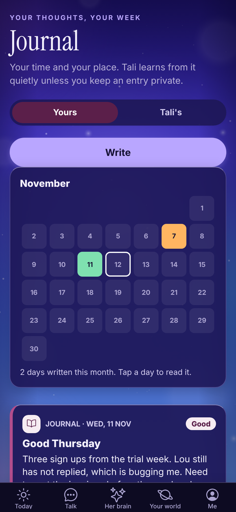
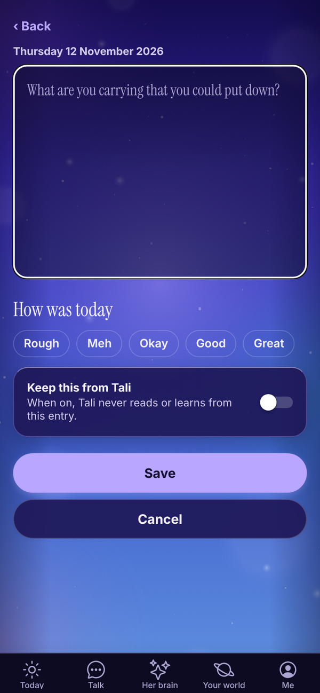
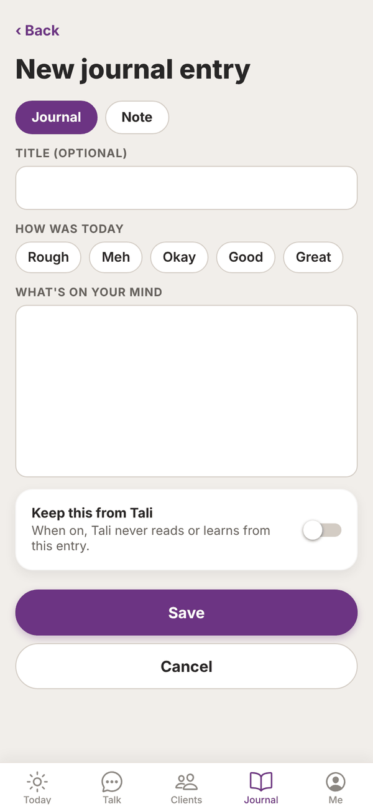
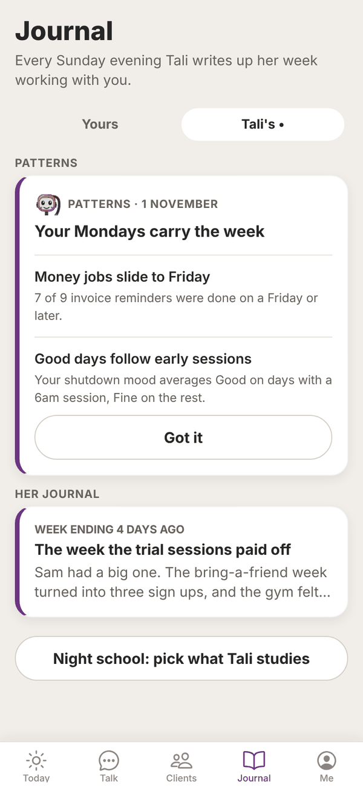

Tali HQ guide
Journal and notes
Keep a private journal and notes that Tali learns from, keep any entry from her, and read Tali's own weekly journal.
The Journal tab has two sides. Yours is your journal and notepad. Tali reads what you write and learns what matters to you, unless you keep an entry private. Tali's is where she writes up her week working with you. Free
Your journal#

Tap Journal at the bottom. The Yours tab lists your entries and notes, newest first. Each shows whether it's a Journal entry or a Note, the date, the title and the first few lines. Entries kept from Tali say Private.
Write an entry or note#


- Tap New entry for a journal entry, or New note for a note. You can switch with the Journal and Note buttons at the top.
- Add a Title (optional).
- For a journal entry, tap How was today: Rough, Meh, Okay, Good or Great. Tap it again to clear it. Notes don't have a mood.
- Write in What's on your mind (or Note). Up to 20,000 characters.
- To hide this entry from Tali, turn on Keep this from Tali.
- Tap Save.
A few lines a day about what happened and what's on your mind is plenty.
Edit, discard or delete#
- Tap an entry to open it, change it and tap Save.
- Cancel closes it. If you've changed something, the button says Discard changes? and then Sure?, so you don't lose words by accident.
- Delete, then Tap again to delete for good.
What Tali does with your journal#
- In Talk, Tali reads your latest entries that aren't private, so she knows what's going on.
- When she writes your brief or Friday check-in, she picks up anything worth remembering from new entries and saves it to her memory of you. You can see and delete those memories on the Me screen. See What Tali knows.
- She never reads entries with Keep this from Tali turned on.
Your shutdown also saves a journal entry called Shutdown with what went well and anything on your mind. See Shut the day down.
Tali's journal Tali HQ#
Every Sunday evening, Tali writes up her week working with you: what you worked on together, what she noticed and what she's keeping an eye on. Tap Tali's at the top. A dot means there's a new one.

Tap an entry to read it in full. Each one is "Week ending" a date and signed by Tali. Her journal uses 1 credit a week.
On Pro, this tab also shows Patterns (what Tali noticed in your last 60 days, see What Tali knows) and a Night school: pick what Tali studies button. Pro
On Free, Tali's tab explains her weekly journal with See plans.
Questions#
Is the journal on the Free plan?
Yes. Your journal and notes are on every plan. Tali's own weekly journal is part of Tali HQ.
What's the difference between a journal entry and a note?
A journal entry has a mood (How was today). A note is for anything else: ideas, lists, plans. Tali can learn from both.
If I turn on Keep this from Tali later, does she forget it?
She stops reading that entry. Anything she already saved to her memory from it stays until you forget it on the Me screen.
Can anyone else read my journal?
No. Your journal is private to your account.
When does Tali's first journal arrive?
On the first Sunday evening of your trial or paid plan. The more you tell her that week, the better it'll be.